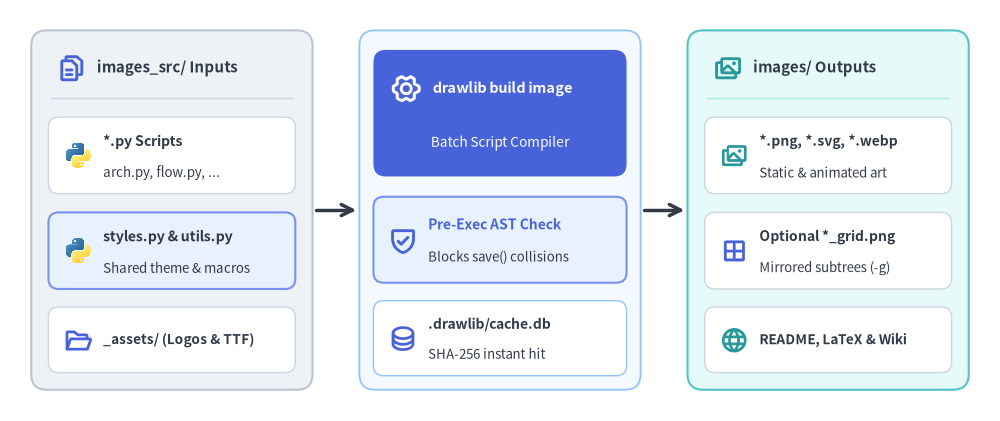
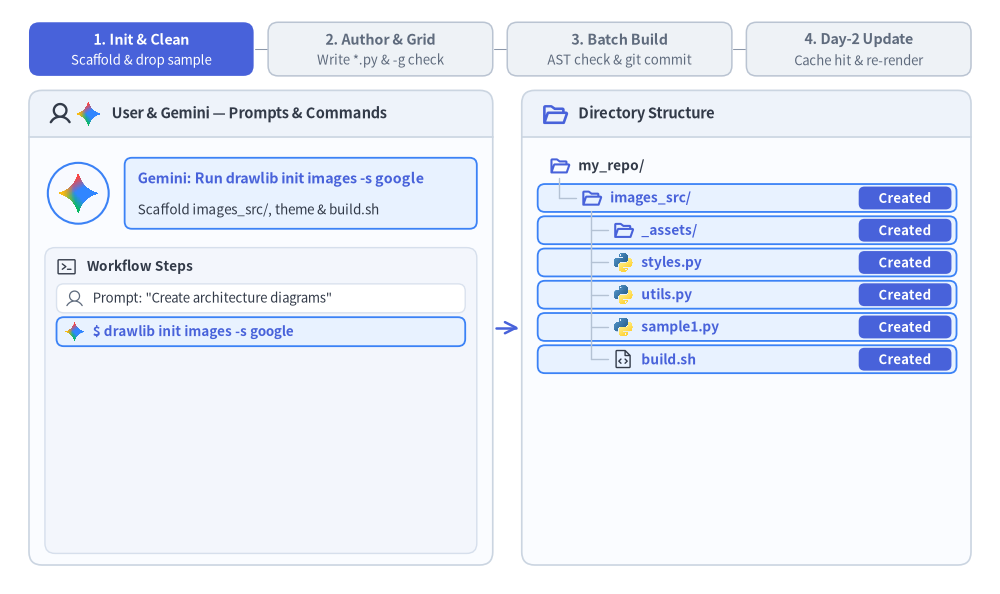
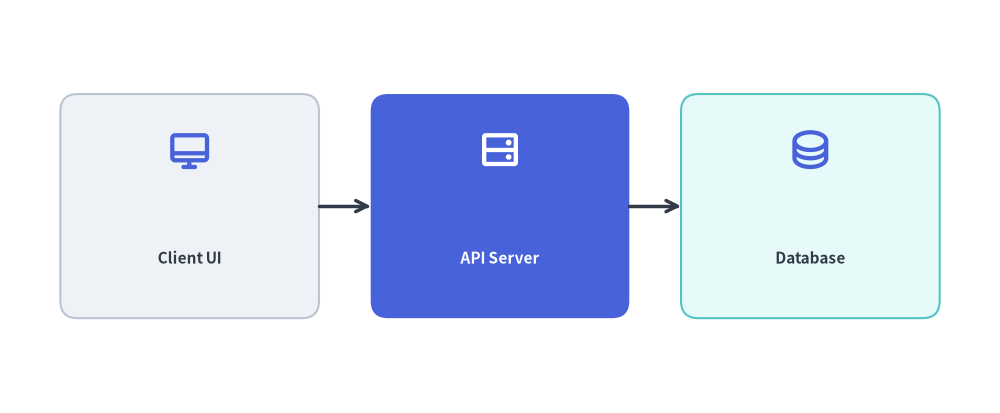

Images Project Guide (drawlib init images)
The images starter template (CLI alias: image) is designed for generating standalone illustration assets, presentation diagrams, article hero banners, and social preview cards directly from batch Python scripts.
Each project separates editable Python source scripts (images_src/) from generated image artifacts (images/), guarded by pre-execution AST collision checks and incremental SHA-256 caching:

Source Code
from drawlib.canvas import save, setup
from drawlib.icons import code, phosphor
from drawlib.lines import line
from drawlib.shapes import rectangle
from drawlib.styles import Styles
from drawlib.text import text
setup(width=128, height=54)
CARD_WHITE = Styles.Neutral.patch(
shape_fill_color=(255, 255, 255),
shape_line_color=(203, 213, 225),
shape_line_width=1.0,
shape_r=1.3,
)
# =========================================================
# 1. Left Card: images_src/ Inputs
# =========================================================
rectangle((22.0, 27.0), width=36.0, height=46.0, style=Styles.Neutral.patch(shape_r=2.0))
phosphor.files((9.2, 45.2), width=3.8, style=Styles.PrimaryBold)
text((12.4, 45.2), "images_src/ Inputs", style=Styles.DarkBold.patch(text_size=10.8, halign="left"))
line(
(6.5, 41.4),
(37.5, 41.4),
style=Styles.Neutral.patch(line_color=(203, 213, 225), line_width=1.0),
)
rectangle((22.0, 34.0), width=31.6, height=9.8, style=CARD_WHITE)
code.python((10.0, 34.0), width=3.6, style=Styles.Neutral)
text((13.2, 35.8), "*.py Scripts", style=Styles.DarkBold.patch(text_size=10.2, halign="left"))
text((13.2, 31.8), "arch.py, flow.py, ...", style=Styles.Dark.patch(text_size=9.6, halign="left"))
rectangle((22.0, 21.8), width=31.6, height=9.8, style=Styles.PrimaryNeutral.patch(shape_r=1.3))
code.python((10.0, 21.8), width=3.6, style=Styles.Neutral)
text((13.2, 23.6), "styles.py & utils.py", style=Styles.DarkBold.patch(text_size=10.2, halign="left"))
text((13.2, 19.6), "Shared theme & macros", style=Styles.Dark.patch(text_size=9.6, halign="left"))
rectangle((22.0, 10.4), width=31.6, height=8.4, style=CARD_WHITE)
phosphor.folder_open((10.0, 10.4), width=3.6, style=Styles.PrimaryBold)
text((13.2, 10.4), "_assets/ (Logos & TTF)", style=Styles.DarkBold.patch(text_size=9.8, halign="left"))
# Connector: Inputs -> Compiler
line((40.4, 27.0), (45.6, 27.0), arrow_head="->", style=Styles.DarkBold)
# =========================================================
# 2. Center Focal Stage: drawlib build image Compiler
# =========================================================
rectangle(
(64.0, 27.0),
width=36.0,
height=46.0,
style=Styles.Neutral.patch(
shape_fill_color=(244, 248, 255),
shape_line_color=(147, 197, 253),
shape_line_width=1.3,
shape_r=2.0,
),
)
rectangle((64.0, 39.4), width=32.4, height=16.2, style=Styles.PrimaryFlat.patch(shape_r=1.6))
phosphor.gear_six((52.0, 42.6), width=4.0, style=Styles.WhiteBold)
text((55.4, 42.6), "drawlib build image", style=Styles.WhiteBold.patch(text_size=10.4, halign="left"))
text((64.0, 35.6), "Batch Script Compiler", style=Styles.White.patch(text_size=9.8))
rectangle((64.0, 23.2), width=32.4, height=11.0, style=Styles.PrimaryNeutral.patch(shape_r=1.3))
phosphor.shield_check((51.6, 23.2), width=3.9, style=Styles.PrimaryBold)
text((54.8, 25.2), "Pre-Exec AST Check", style=Styles.PrimaryBold.patch(text_size=10.0, halign="left"))
text((54.8, 21.0), "Blocks save() collisions", style=Styles.Dark.patch(text_size=9.5, halign="left"))
rectangle(
(64.0, 10.6),
width=32.4,
height=9.6,
style=CARD_WHITE.patch(shape_line_color=(147, 197, 253)),
)
phosphor.database((51.6, 10.6), width=3.7, style=Styles.PrimaryBold)
text((54.8, 12.4), ".drawlib/cache.db", style=Styles.DarkBold.patch(text_size=10.0, halign="left"))
text((54.8, 8.6), "SHA-256 instant hit", style=Styles.Dark.patch(text_size=9.5, halign="left"))
# Connector: Compiler -> Outputs
line((82.4, 27.0), (87.6, 27.0), arrow_head="->", style=Styles.DarkBold)
# =========================================================
# 3. Right Card: images/ Batch Outputs
# =========================================================
rectangle(
(106.0, 27.0),
width=36.0,
height=46.0,
style=Styles.SecondaryNeutral.patch(shape_r=2.0),
)
phosphor.images((93.2, 45.2), width=3.8, style=Styles.SecondaryBold)
text((96.4, 45.2), "images/ Outputs", style=Styles.DarkBold.patch(text_size=10.8, halign="left"))
line(
(90.5, 41.4),
(121.5, 41.4),
style=Styles.Neutral.patch(line_color=(167, 243, 208), line_width=1.0),
)
rectangle((106.0, 34.0), width=31.6, height=9.8, style=CARD_WHITE)
phosphor.images((94.0, 34.0), width=3.6, style=Styles.SecondaryBold)
text((97.2, 35.8), "*.png, *.svg, *.webp", style=Styles.DarkBold.patch(text_size=10.0, halign="left"))
text((97.2, 31.8), "Static & animated art", style=Styles.Dark.patch(text_size=9.5, halign="left"))
rectangle((106.0, 21.8), width=31.6, height=9.8, style=CARD_WHITE)
phosphor.grid_four((94.0, 21.8), width=3.6, style=Styles.PrimaryBold)
text((97.2, 23.6), "Optional *_grid.png", style=Styles.DarkBold.patch(text_size=10.0, halign="left"))
text((97.2, 19.6), "Mirrored subtrees (-g)", style=Styles.Dark.patch(text_size=9.5, halign="left"))
rectangle((106.0, 10.4), width=31.6, height=8.4, style=CARD_WHITE)
phosphor.globe((94.0, 10.4), width=3.6, style=Styles.SecondaryBold)
text((97.2, 10.4), "README, LaTeX & Wiki", style=Styles.DarkBold.patch(text_size=9.8, halign="left"))
save()
1. End-to-End Project Workflow
An images project follows a streamlined four-phase lifecycle: scaffold the project and clean starter samples, verify geometry with the -g coordinate grid, run the batch compiler with AST collision protection, and enjoy sub-millisecond SQLite cache hits on Day-2 updates.

Source Code
from __future__ import annotations
from drawlib.anim import Animation
from drawlib.canvas import save, setup
from drawlib.icons import ai, code, devops, phosphor
from drawlib.lines import line
from drawlib.shapes import circle, rectangle
from drawlib.styles import Styles
from drawlib.text import text
W, H = 138.0, 82.0
setup(width=W, height=H)
anim = Animation(fps=10.0, loop=0)
PANE_BG = Styles.Neutral.patch(
shape_fill_color=(250, 252, 255),
shape_line_width=0,
shape_r=1.8,
)
PANE_HEADER_TOP = Styles.Neutral.patch(
shape_fill_color=(238, 243, 250),
shape_line_width=0,
shape_r=1.8,
)
PANE_HEADER_FLAT = Styles.Neutral.patch(
shape_fill_color=(238, 243, 250),
shape_line_width=0,
shape_r=0.0,
)
PANE_BORDER = Styles.Neutral.patch(
shape_fill_color=(0, 0, 0, 0),
shape_line_color=(203, 213, 225),
shape_line_width=1.2,
shape_r=1.8,
)
SUBPANEL_BG = Styles.Neutral.patch(
shape_fill_color=(243, 246, 252),
shape_line_color=(214, 223, 236),
shape_line_width=1.0,
shape_r=1.4,
)
ROW_ACTIVE = Styles.PrimaryNeutral.patch(
shape_fill_color=(232, 242, 255),
shape_line_color=(59, 130, 246),
shape_line_width=1.3,
shape_r=1.0,
)
ROW_USER = Styles.Neutral.patch(
shape_fill_color=(241, 245, 251),
shape_line_color=(51, 65, 85),
shape_line_width=1.4,
shape_r=1.0,
)
ROW_CACHED = Styles.PrimaryNeutral.patch(
shape_fill_color=(240, 246, 255),
shape_line_color=(147, 197, 253),
shape_line_width=1.1,
shape_r=1.0,
)
ROW_CLEANED = Styles.Neutral.patch(
shape_fill_color=(254, 249, 238),
shape_line_color=(217, 119, 6),
shape_line_width=1.1,
shape_r=1.0,
)
ROW_OUTPUT = Styles.SecondaryNeutral.patch(
shape_fill_color=(236, 250, 244),
shape_line_color=(34, 160, 107),
shape_line_width=1.2,
shape_r=1.0,
)
ROW_DONE = Styles.Neutral.patch(
shape_fill_color=(255, 255, 255),
shape_line_color=(218, 226, 238),
shape_line_width=1.0,
shape_r=1.0,
)
PART_ITEMS = [
("1. Init & Clean", "Scaffold & drop sample"),
("2. Author & Grid", "Write *.py & -g check"),
("3. Batch Build", "AST check & git commit"),
("4. Day-2 Update", "Cache hit & re-render"),
]
def draw_step_bar(active_part: int) -> None:
"""Draw top 4-phase progress bar (active_part is 1..4)."""
pill_w = 31.0
pill_h = 7.4
gap = 2.0
start_x = 4.0 + pill_w / 2.0
cy = 75.2
for idx, (label, sublabel) in enumerate(PART_ITEMS, start=1):
cx = start_x + (idx - 1) * (pill_w + gap)
if idx > 1:
prev_cx = cx - (pill_w + gap)
line(
(prev_cx + pill_w / 2.0 + 0.2, cy),
(cx - pill_w / 2.0 - 0.2, cy),
style=Styles.PrimaryBold if idx <= active_part else Styles.MutedThin,
)
if idx == active_part:
st = Styles.PrimaryFlat.patch(shape_r=1.4)
tst = Styles.WhiteBold.patch(text_size=10.3)
sub_tst = Styles.White.patch(text_size=9.5)
elif idx < active_part:
st = Styles.PrimaryNeutral.patch(shape_r=1.4, shape_line_width=1.1)
tst = Styles.PrimaryBold.patch(text_size=10.3)
sub_tst = Styles.Primary.patch(text_size=9.5)
else:
st = Styles.Neutral.patch(shape_r=1.4, shape_line_width=1.1)
tst = Styles.MutedBold.patch(text_size=10.3)
sub_tst = Styles.Muted.patch(text_size=9.5)
rectangle((cx, cy), width=pill_w, height=pill_h, style=st)
text((cx, cy + 1.35), label, style=tst)
text((cx, cy - 1.55), sublabel, style=sub_tst)
def draw_pane_shell(cx: float, width: float) -> None:
"""Draw a rounded pane container with a top header bar."""
rectangle((cx, 36.75), width=width, height=65.5, style=PANE_BG)
rectangle((cx, 66.25), width=width, height=6.5, style=PANE_HEADER_TOP)
rectangle((cx, 64.60), width=width, height=3.2, style=PANE_HEADER_FLAT)
line(
(cx - width / 2.0, 63.0),
(cx + width / 2.0, 63.0),
style=Styles.Neutral.patch(line_color=(203, 213, 225), line_width=1.2),
)
rectangle((cx, 36.75), width=width, height=65.5, style=PANE_BORDER)
def draw_user_avatar(xy: tuple[float, float], radius: float = 4.2) -> None:
"""Draw circular User avatar badge."""
circle(
xy,
radius=radius,
style=Styles.Neutral.patch(
shape_fill_color=(241, 245, 250),
shape_line_color=(51, 65, 85),
shape_line_width=1.6,
),
)
phosphor.user(xy, width=radius * 1.25, style=Styles.DarkBold)
def draw_gemini_avatar(xy: tuple[float, float], radius: float = 4.2) -> None:
"""Draw circular Gemini AI Agent avatar badge."""
circle(
xy,
radius=radius,
style=Styles.Neutral.patch(
shape_fill_color=(248, 250, 255),
shape_line_color=(59, 130, 246),
shape_line_width=1.5,
),
)
ai.gemini(xy, width=radius * 1.42, style=Styles.Neutral)
def draw_actor_row_icon(
actor_kind: str,
xy: tuple[float, float],
*,
muted: bool = False,
) -> None:
"""Draw mini User or Gemini icon at the start of an operation row."""
if actor_kind == "user":
phosphor.user(xy, width=2.8, style=Styles.Muted if muted else Styles.DarkBold)
elif actor_kind == "user_git":
phosphor.user(xy, width=2.8, style=Styles.Muted if muted else Styles.DarkBold)
devops.git((xy[0] + 2.8, xy[1]), width=2.6, style=Styles.Neutral)
else:
ai.gemini(xy, width=2.9, style=Styles.Neutral)
def draw_tree_icon(kind: str, xy: tuple[float, float], *, muted: bool = False) -> None:
"""Draw file or folder icon in the right-side directory tree."""
if kind == "folder_open":
phosphor.folder_open(
xy,
width=3.1,
style=Styles.Muted if muted else Styles.PrimaryBold,
)
elif kind == "folder_out":
phosphor.folder(
xy,
width=3.1,
style=Styles.Muted if muted else Styles.SecondaryBold,
)
elif kind == "py":
code.python(xy, width=2.9, style=Styles.Neutral)
elif kind == "sh":
phosphor.file_code(
xy,
width=3.0,
style=Styles.Muted if muted else Styles.Dark,
)
elif kind == "img":
phosphor.images(
xy,
width=3.0,
style=Styles.Muted if muted else Styles.SecondaryBold,
)
elif kind == "grid":
phosphor.grid_four(
xy,
width=3.0,
style=Styles.Muted if muted else Styles.PrimaryBold,
)
elif kind == "db":
phosphor.database(
xy,
width=2.9,
style=Styles.Muted if muted else Styles.PrimaryBold,
)
def draw_workspace_frame(
*,
active_phase: int,
actor: str,
actor_title: str,
actor_sub: str,
ops: list[tuple[str, str, str]],
show_day2_note: bool,
tree_items: list[tuple[str, int, str, str]],
row_states: dict[str, tuple[str, str]],
committed: bool,
pulse_arrow: bool,
) -> None:
"""Render one frame of the 2-pane split workspace."""
draw_step_bar(active_phase)
# Left Pane
draw_pane_shell(36.0, 64.0)
phosphor.user((8.3, 66.25), width=3.4, style=Styles.DarkBold)
ai.gemini((12.2, 66.25), width=3.7, style=Styles.Neutral)
text(
(15.4, 66.25),
"User & Gemini — Prompts & Commands",
style=Styles.DarkBold.patch(text_size=10.5, halign="left"),
)
if actor == "user":
draw_user_avatar((10.8, 55.3), radius=4.2)
bubble_st = ROW_USER
title_st = Styles.DarkBold.patch(text_size=10.3, halign="left")
else:
draw_gemini_avatar((10.8, 55.3), radius=4.2)
bubble_st = ROW_ACTIVE
title_st = Styles.PrimaryBold.patch(text_size=10.3, halign="left")
rectangle((41.5, 55.3), width=48.6, height=9.8, style=bubble_st)
text((19.0, 57.3), actor_title, style=title_st)
text((19.0, 53.0), actor_sub, style=Styles.Dark.patch(text_size=9.7, halign="left"))
rectangle((36.0, 26.7), width=59.6, height=42.2, style=SUBPANEL_BG)
phosphor.terminal_window((9.2, 45.2), width=3.1, style=Styles.Dark)
text(
(12.0, 45.2),
"Workflow Steps",
style=Styles.DarkBold.patch(text_size=9.8, halign="left"),
)
op_ys = [40.8, 36.2, 31.6, 27.0, 22.4, 17.8, 13.2, 8.6]
for (akind, label, state), oy in zip(ops, op_ys):
is_done = state == "done"
if state == "active_user":
ost = ROW_USER
otxt = Styles.DarkBold.patch(text_size=9.7, halign="left")
elif state == "active_gemini":
ost = ROW_ACTIVE
otxt = Styles.PrimaryBold.patch(text_size=9.7, halign="left")
else:
ost = ROW_DONE
otxt = Styles.Dark.patch(text_size=9.5, halign="left")
rectangle((36.0, oy), width=56.4, height=4.0, style=ost)
draw_actor_row_icon(akind, (10.3, oy), muted=is_done)
text((15.5 if akind == "user_git" else 12.8, oy), label, style=otxt)
if show_day2_note:
rectangle(
(36.0, 11.4),
width=55.6,
height=7.6,
style=Styles.Neutral.patch(
shape_fill_color=(255, 255, 255),
shape_line_color=(210, 220, 234),
shape_line_width=1.0,
shape_r=1.1,
),
)
text(
(36.0, 13.2),
"1 day later — styles.py, utils.py & arch.py untouched",
style=Styles.MutedBold.patch(text_size=9.6),
)
text(
(36.0, 9.6),
"Unchanged scripts restore from .drawlib/cache.db in <1ms",
style=Styles.Muted.patch(text_size=9.5),
)
# Center connector arrow
line(
(68.4, 36.75),
(71.6, 36.75),
arrow_head="->",
style=(
Styles.PrimaryBold.patch(line_width=1.8)
if pulse_arrow
else Styles.MutedThin.patch(line_width=1.2)
),
)
# Right Pane
draw_pane_shell(103.0, 62.0)
phosphor.folder_open((76.6, 66.25), width=3.8, style=Styles.PrimaryBold)
text(
(79.8, 66.25),
"Directory Structure",
style=Styles.DarkBold.patch(text_size=10.6, halign="left"),
)
if committed:
rectangle((123.2, 66.25), width=17.6, height=4.4, style=ROW_OUTPUT)
devops.git((116.8, 66.25), width=2.8, style=Styles.Neutral)
text(
(119.0, 66.25),
"Committed",
style=Styles.SecondaryBold.patch(text_size=9.5, halign="left"),
)
tree_rows = [
(key, lvl, ik, lbl, 59.10 - idx * 4.45)
for idx, (key, lvl, ik, lbl) in enumerate(tree_items)
]
# Row highlight pills & status badges
for key, _lvl, _ik, _lbl, ry in tree_rows:
if key not in row_states:
continue
rstate, badge_txt = row_states[key]
if rstate in {"new", "active"}:
rst = ROW_ACTIVE
b_st = Styles.PrimaryFlat.patch(shape_r=0.8)
b_txt = Styles.WhiteBold.patch(text_size=9.5)
elif rstate == "cached":
rst = ROW_CACHED
b_st = Styles.PrimaryNeutral.patch(shape_r=0.8)
b_txt = Styles.PrimaryBold.patch(text_size=9.5)
elif rstate == "cleaned":
rst = ROW_CLEANED
b_st = Styles.Neutral.patch(
shape_fill_color=(254, 243, 199),
shape_line_color=(217, 119, 6),
shape_line_width=1.0,
shape_r=0.8,
)
b_txt = Styles.DarkBold.patch(text_size=9.5)
elif rstate in {"output", "verified"}:
rst = ROW_OUTPUT
b_st = Styles.SecondaryFlat.patch(shape_r=0.8)
b_txt = Styles.WhiteBold.patch(text_size=9.5)
else:
rst = None
b_st = None
b_txt = None
if rst is not None:
rectangle((103.1, ry), width=57.8, height=3.85, style=rst)
if badge_txt and b_st is not None and b_txt is not None:
bw = 15.8 if len(badge_txt) >= 9 else 12.8
bx = 131.3 - bw / 2.0
rectangle(
(bx, ry),
width=bw,
height=3.15,
style=b_st,
text=badge_txt,
text_style=b_txt,
)
# Geometric tree guide lines
guide_st = Styles.MutedThin.patch(line_color=(180, 194, 212), line_width=1.0)
lvl1_ys = [ry for _k, lvl, _ik, _lb, ry in tree_rows if lvl == 1]
if lvl1_ys:
line((77.2, tree_rows[0][4] - 1.75), (77.2, min(lvl1_ys)), style=guide_st)
idx_r = 0
while idx_r < len(tree_rows):
_k, lvl, _ik, _lb, ry = tree_rows[idx_r]
if lvl == 1:
j = idx_r + 1
last_child_y = None
while j < len(tree_rows) and tree_rows[j][1] == 2:
last_child_y = tree_rows[j][4]
j += 1
if last_child_y is not None:
line((81.6, ry - 1.75), (81.6, last_child_y), style=guide_st)
idx_r = j
else:
idx_r += 1
for key, lvl, ik, lbl, ry in tree_rows:
rstate = row_states.get(key, ("normal", ""))[0]
is_muted = rstate == "muted"
if lvl == 0:
ix, lx = 77.2, 79.8
elif lvl == 1:
line((77.2, ry), (79.5, ry), style=guide_st)
ix, lx = 81.6, 84.2
else:
line((81.6, ry), (83.9, ry), style=guide_st)
ix, lx = 86.0, 88.5
draw_tree_icon(ik, (ix, ry), muted=is_muted)
if rstate in {"new", "active", "cached"}:
t_st = Styles.PrimaryBold.patch(text_size=9.9, halign="left")
elif rstate in {"output", "verified"}:
t_st = Styles.SecondaryBold.patch(text_size=9.9, halign="left")
elif rstate == "cleaned":
t_st = Styles.MutedBold.patch(text_size=9.8, halign="left")
elif is_muted:
t_st = Styles.Muted.patch(text_size=9.7, halign="left")
elif lvl <= 1:
t_st = Styles.DarkBold.patch(text_size=9.9, halign="left")
else:
t_st = Styles.Dark.patch(text_size=9.8, halign="left")
text((lx, ry), lbl, style=t_st)
TREE_STARTER = [
("root", 0, "folder_open", "my_repo/"),
("src", 1, "folder_open", "images_src/"),
("assets", 2, "folder_open", "_assets/"),
("styles", 2, "py", "styles.py"),
("utils", 2, "py", "utils.py"),
("sample1", 2, "py", "sample1.py"),
("build_sh", 2, "sh", "build.sh"),
]
TREE_AUTHORED = [
("root", 0, "folder_open", "my_repo/"),
("src", 1, "folder_open", "images_src/"),
("assets", 2, "folder_open", "_assets/"),
("styles", 2, "py", "styles.py"),
("utils", 2, "py", "utils.py"),
("arch", 2, "py", "arch.py"),
("flow", 2, "py", "flow.py"),
("build_sh", 2, "sh", "build.sh"),
]
TREE_GRID_PREVIEW = [
*TREE_AUTHORED,
("scratch", 1, "folder_out", ".drawlib/scratch/"),
("arch_grid", 2, "grid", "arch_grid.png"),
]
TREE_BUILT = [
*TREE_AUTHORED,
("out_dir", 1, "folder_out", "images/"),
("arch_png", 2, "img", "arch.png"),
("flow_png", 2, "img", "flow.png"),
("cache_db", 1, "db", ".drawlib/cache.db"),
]
DURATIONS = [3.1, 3.1, 3.3] * 4
# =====================================================================
# Phase 1: 1. Init & Clean (f0, f1, f2)
# =====================================================================
with anim.frame(duration=DURATIONS[0]):
draw_workspace_frame(
active_phase=1,
actor="gemini",
actor_title="Gemini: Run drawlib init images -s google",
actor_sub="Scaffold images_src/, theme & build.sh",
ops=[
("user", 'Prompt: "Create architecture diagrams"', "done"),
("gemini", "$ drawlib init images -s google", "active_gemini"),
],
show_day2_note=False,
tree_items=TREE_STARTER,
row_states={
"src": ("new", "Created"),
"assets": ("new", "Created"),
"styles": ("new", "Created"),
"utils": ("new", "Created"),
"sample1": ("new", "Created"),
"build_sh": ("new", "Created"),
},
committed=False,
pulse_arrow=True,
)
with anim.frame(duration=DURATIONS[1]):
draw_workspace_frame(
active_phase=1,
actor="gemini",
actor_title="Gemini: Configure styles.py & utils.py",
actor_sub="Set shared brand palette, fonts & macros",
ops=[
("user", 'Prompt: "Create architecture diagrams"', "done"),
("gemini", "$ drawlib init images -s google", "done"),
("gemini", "Edit images_src/styles.py & utils.py", "active_gemini"),
],
show_day2_note=False,
tree_items=TREE_STARTER,
row_states={
"styles": ("active", "Updated"),
"utils": ("active", "Updated"),
},
committed=False,
pulse_arrow=True,
)
with anim.frame(duration=DURATIONS[2]):
draw_workspace_frame(
active_phase=1,
actor="gemini",
actor_title="Gemini: Clean starter sample1.py",
actor_sub="Remove boilerplate so only real scripts build",
ops=[
("user", 'Prompt: "Create architecture diagrams"', "done"),
("gemini", "$ drawlib init images -s google", "done"),
("gemini", "Edit images_src/styles.py & utils.py", "done"),
("gemini", "$ rm -f images_src/sample1.py", "active_gemini"),
],
show_day2_note=False,
tree_items=TREE_STARTER,
row_states={
"sample1": ("cleaned", "Cleaned"),
},
committed=False,
pulse_arrow=True,
)
# =====================================================================
# Phase 2: 2. Author & Grid (f3, f4, f5)
# =====================================================================
with anim.frame(duration=DURATIONS[3]):
draw_workspace_frame(
active_phase=2,
actor="gemini",
actor_title="Gemini: Author arch.py & flow.py",
actor_sub="Write declarative Python drawing scripts",
ops=[
("gemini", "$ drawlib init images -s google", "done"),
("gemini", "Edit images_src/styles.py & utils.py", "done"),
("gemini", "$ rm -f images_src/sample1.py", "done"),
("gemini", "Create images_src/arch.py & flow.py", "active_gemini"),
],
show_day2_note=False,
tree_items=TREE_AUTHORED,
row_states={
"arch": ("new", "Created"),
"flow": ("new", "Created"),
},
committed=False,
pulse_arrow=True,
)
with anim.frame(duration=DURATIONS[4]):
draw_workspace_frame(
active_phase=2,
actor="gemini",
actor_title="Gemini: Preview with -g coordinate grid",
actor_sub="Multimodal review of scratch/arch_grid.png",
ops=[
("gemini", "$ drawlib init images -s google", "done"),
("gemini", "Edit images_src/styles.py & utils.py", "done"),
("gemini", "$ rm -f images_src/sample1.py", "done"),
("gemini", "Create images_src/arch.py & flow.py", "done"),
("gemini", "$ drawlib show arch.py -g -o ...grid.png", "active_gemini"),
],
show_day2_note=False,
tree_items=TREE_GRID_PREVIEW,
row_states={
"arch": ("active", "Inspect"),
"arch_grid": ("active", "Grid -g"),
},
committed=False,
pulse_arrow=True,
)
with anim.frame(duration=DURATIONS[5]):
draw_workspace_frame(
active_phase=2,
actor="gemini",
actor_title="Gemini: Refine coordinates in arch.py",
actor_sub="Zero clipping, 4u+ margins & 50%+ neutral",
ops=[
("gemini", "$ drawlib init images -s google", "done"),
("gemini", "Edit images_src/styles.py & utils.py", "done"),
("gemini", "$ rm -f images_src/sample1.py", "done"),
("gemini", "Create images_src/arch.py & flow.py", "done"),
("gemini", "$ drawlib show arch.py -g -o ...grid.png", "done"),
("gemini", "Verify & refine arch.py, flow.py", "active_gemini"),
],
show_day2_note=False,
tree_items=TREE_AUTHORED,
row_states={
"arch": ("verified", "Verified"),
"flow": ("verified", "Verified"),
},
committed=False,
pulse_arrow=True,
)
# =====================================================================
# Phase 3: 3. Batch Build (f6, f7, f8)
# =====================================================================
with anim.frame(duration=DURATIONS[6]):
draw_workspace_frame(
active_phase=3,
actor="gemini",
actor_title="Gemini: Run ./images_src/build.sh",
actor_sub="Pre-exec AST target check passes (0 collisions)",
ops=[
("gemini", "$ drawlib init images -s google", "done"),
("gemini", "Create images_src/arch.py & flow.py", "done"),
("gemini", "$ drawlib show arch.py -g -o ...grid.png", "done"),
("gemini", "Verify & refine arch.py, flow.py", "done"),
("gemini", "$ ./images_src/build.sh (AST check OK)", "active_gemini"),
],
show_day2_note=False,
tree_items=TREE_AUTHORED,
row_states={
"arch": ("verified", "AST OK"),
"flow": ("verified", "AST OK"),
"build_sh": ("active", "Running"),
},
committed=False,
pulse_arrow=True,
)
with anim.frame(duration=DURATIONS[7]):
draw_workspace_frame(
active_phase=3,
actor="gemini",
actor_title="Gemini: Batch outputs written to images/",
actor_sub="Rendered arch.png & flow.png + SQLite hashes",
ops=[
("gemini", "$ drawlib init images -s google", "done"),
("gemini", "Create images_src/arch.py & flow.py", "done"),
("gemini", "$ drawlib show arch.py -g -o ...grid.png", "done"),
("gemini", "Verify & refine arch.py, flow.py", "done"),
("gemini", "$ ./images_src/build.sh -> images/*.png", "active_gemini"),
],
show_day2_note=False,
tree_items=TREE_BUILT,
row_states={
"out_dir": ("output", "Output"),
"arch_png": ("output", "Output"),
"flow_png": ("output", "Output"),
"cache_db": ("cached", "Indexed"),
},
committed=False,
pulse_arrow=True,
)
with anim.frame(duration=DURATIONS[8]):
draw_workspace_frame(
active_phase=3,
actor="user",
actor_title="User: Commit scripts & rendered images",
actor_sub="Source code and PNGs versioned together",
ops=[
("gemini", "$ drawlib init images -s google", "done"),
("gemini", "Create images_src/arch.py & flow.py", "done"),
("gemini", "$ drawlib show arch.py -g -o ...grid.png", "done"),
("gemini", "Verify & refine arch.py, flow.py", "done"),
("gemini", "$ ./images_src/build.sh -> images/*.png", "done"),
("user_git", "$ git add images_src/ images/ && git commit", "active_user"),
],
show_day2_note=False,
tree_items=TREE_BUILT,
row_states={},
committed=True,
pulse_arrow=False,
)
# =====================================================================
# Phase 4: 4. Day-2 Update (f9, f10, f11)
# =====================================================================
with anim.frame(duration=DURATIONS[9]):
draw_workspace_frame(
active_phase=4,
actor="user",
actor_title='1 day later — "Update flow.py pipeline"',
actor_sub="Modify images_src/flow.py; arch.py unchanged",
ops=[
("user", 'Prompt: "Add retry stage to flow.py"', "done"),
("gemini", "Edit images_src/flow.py", "active_gemini"),
],
show_day2_note=True,
tree_items=TREE_BUILT,
row_states={
"assets": ("muted", ""),
"styles": ("muted", ""),
"utils": ("muted", ""),
"arch": ("muted", ""),
"flow": ("active", "Modified"),
"arch_png": ("muted", ""),
"flow_png": ("muted", ""),
},
committed=False,
pulse_arrow=True,
)
with anim.frame(duration=DURATIONS[10]):
draw_workspace_frame(
active_phase=4,
actor="gemini",
actor_title="Gemini: Incremental rebuild via cache.db",
actor_sub="arch.png hits cache (<1ms); flow.png re-renders",
ops=[
("user", 'Prompt: "Add retry stage to flow.py"', "done"),
("gemini", "Edit images_src/flow.py", "done"),
("gemini", "$ ./images_src/build.sh (1 hit, 1 built)", "active_gemini"),
],
show_day2_note=True,
tree_items=TREE_BUILT,
row_states={
"assets": ("muted", ""),
"styles": ("muted", ""),
"utils": ("muted", ""),
"arch": ("muted", ""),
"arch_png": ("cached", "Cached <1ms"),
"flow_png": ("output", "Updated"),
"cache_db": ("cached", "Cache Hit"),
},
committed=False,
pulse_arrow=True,
)
with anim.frame(duration=DURATIONS[11]):
draw_workspace_frame(
active_phase=4,
actor="user",
actor_title="User: Commit updated script & PNG",
actor_sub="Clean Git diff — only flow.py & flow.png changed",
ops=[
("user", 'Prompt: "Add retry stage to flow.py"', "done"),
("gemini", "Edit images_src/flow.py", "done"),
("gemini", "$ ./images_src/build.sh (1 hit, 1 built)", "done"),
("user_git", '$ git commit -am "Update flow diagram"', "active_user"),
],
show_day2_note=True,
tree_items=TREE_BUILT,
row_states={},
committed=True,
pulse_arrow=False,
)
save()
2. Project Initialization
Scaffold a new images project using drawlib init:
# Scaffold standard images project in current directory (creates 'images_src/'):
drawlib init images
# Or with custom target name, theme, and language (creates 'my_assets_src/'):
drawlib init images my_assets -s google -l en
3. Directory Layout & Anatomy
Editable Source Directory (images_src/)
styles.py&utils.py: Project-wide styling overrides (Colors,Styles, CJK fonts) and reusable component helpers automatically loaded duringdrawlib showanddrawlib build image._assets/: Static raster logos, background images, or custom.ttffonts referenced via relative paths (for example,"_assets/logo.png").*.pyDrawing Scripts: Standalone Python scripts (including nested subdirectories such asnetwork/vpc_peering.py) that callsave()to emit images.build.sh&build_image.sh: Batch shell wrappers invokingdrawlib build image images_src/ -o images/.
Generated Output Directory (images/)
*.png,*.svg,*.webp: Compiled static and animated illustration artifacts mirroring the directory hierarchy ofimages_src/.- Optional
*_grid.png: Coordinate grid overlays generated on demand when--grid(-g) is passed.
Key Rules
- Source of Truth: Always author drawing scripts in
images_src/. After scaffolding, replace or remove the startersample1.pyandsample2.pyfiles so only your desired diagrams are built. - Never Edit
images/: Theimages/folder is an output artifact directory overwritten during builds.
4. Writing Drawing Scripts
In an images project, each .py file inside images_src/ is an independent drawing script. Call save() at the end of the script to output the image:
# images_src/architecture_overview.py
from drawlib.canvas import save, setup
from drawlib.icons import phosphor
from drawlib.lines import line
from drawlib.shapes import rectangle
from drawlib.styles import Styles
from drawlib.text import text
setup(width=116, height=48)
# Draw components (50%+ neutral baseline + 1 primary focal point)
rectangle((22, 24), width=30, height=26, style=Styles.Neutral.patch(shape_r=2.0))
phosphor.desktop((22, 30.5), width=5.2, style=Styles.PrimaryBold)
text((22, 18.0), "Client UI", style=Styles.DarkBold.patch(text_size=11.0))
rectangle((58, 24), width=30, height=26, style=Styles.PrimaryFlat.patch(shape_r=2.0))
phosphor.hard_drives((58, 30.5), width=5.2, style=Styles.WhiteBold)
text((58, 18.0), "API Server", style=Styles.WhiteBold.patch(text_size=11.0))
rectangle((94, 24), width=30, height=26, style=Styles.SecondaryNeutral.patch(shape_r=2.0))
phosphor.database((94, 30.5), width=5.2, style=Styles.PrimaryBold)
text((94, 18.0), "Database", style=Styles.DarkBold.patch(text_size=11.0))
line((37, 24), (43, 24), arrow_head="->", style=Styles.DarkBold)
line((73, 24), (79, 24), arrow_head="->", style=Styles.DarkBold)
# Save image (defaults to <script_stem>.png or save("architecture_overview.png") in scripts)
save()

How save() Interacts with drawlib build image -o images/:
- Automatic Output Redirection: When executed via
drawlib build image images_src/ -o images/, relative paths passed tosave("architecture_overview.png")(orsave()with no filename, which defaults to<script_stem>.png) are automatically written inside the-o images/directory, preserving any nested subdirectory hierarchy underimages_src/. - Pre-Execution AST Duplicate Collision Check: Before running any scripts in a batch, Drawlib parses the Python AST of all target
.pyfiles to inspect theirsave(...)targets. If two scripts would write to the exact same output file path, the build aborts immediately before modifying disk state.
5. Building Images
Automated Build (./build_image.sh or ./build.sh)
Execute the provided build script:
./images_src/build.sh
Direct CLI Command
Alternatively, invoke the builder directly:
drawlib build image images_src/ -o images/ -s images_src/styles.py -u images_src/utils.py
Useful Build Flags:
--grid(-g): Automatically generates companion*_grid.pngimages overlaid with coordinate grid lines for visual debugging.-f webp: Overrides output format across all scripts to modern WebP.--no-cache: Forces a clean re-render of all images, bypassing the SQLite hash cache (.drawlib/cache.db).
6. Parallel Multi-Agent Script Authoring
Because each .py script in images_src/ is independent, AI coding agents can generate multiple illustrations in parallel by delegating scripts across subagents:
- Phase 1 (Parent Setup): Run
drawlib init imagesand configure sharedimages_src/styles.py,images_src/utils.py, and_assets/first. - Phase 2 (Parallel Subagents): Assign each subagent a disjoint script (
images_src/<name>.py). Each subagent authors its script and runs a grid preview with a unique scratch filename (uv run drawlib show images_src/<name>.py -s images_src/styles.py -u images_src/utils.py -g -o .drawlib/scratch/<name>_grid.png) to verify layout without colliding with other subagents. - Phase 3 (Unified Batch Build): Once all subagents finish, the parent agent runs
./images_src/build.shonce to compile all scripts intoimages/.